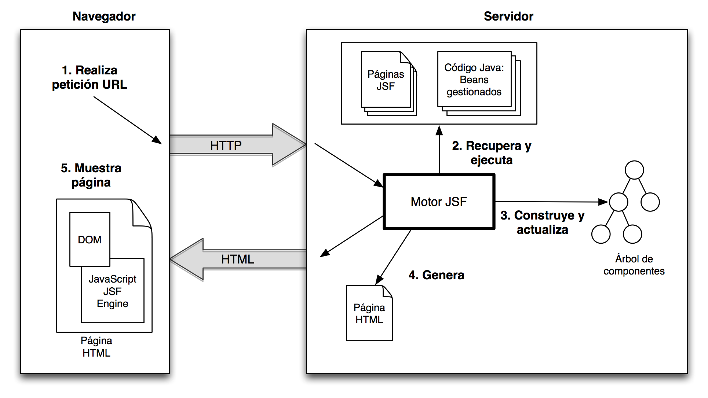

JSF: JavaServer Faces
¿Qué es JSF?
JavaServer Faces (JSF) es un framework de Java para la construcción de interfaces de usuario web basadas en componentes reutilizables. Es parte de la plataforma Java EE y permite separar claramente la lógica de negocio, la presentación y la navegación.

Características Principales
- Basado en componentes reutilizables.
- Integración con expresiones EL para acceder a datos del backend.
- Soporte para validación, conversión, internacionalización y manejo de eventos.
- Administración automática del ciclo de vida de la vista.
Estructura Básica de una Página JSF
<!DOCTYPE html>
<html xmlns="http://www.w3.org/1999/xhtml"
xmlns:h="http://xmlns.jcp.org/jsf/html">
<h:head>
<title>Mi primera página JSF</title>
</h:head>
<h:body>
<h:form>
<h:outputText value="Hola, JSF!" />
</h:form>
</h:body>
</html>

Managed Beans
Un Managed Bean es una clase Java que actúa como controlador para JSF, y se enlaza con las vistas mediante expresiones EL.
@ManagedBean
public class SaludoBean {
private String mensaje = "¡Hola desde JSF!";
public String getMensaje() {
return mensaje;
}
public void setMensaje(String mensaje) {
this.mensaje = mensaje;
}
}

Ejemplo: Enlace entre Bean y Vista
HTML (JSF):
<h:outputText value="#{saludoBean.mensaje}" />Este código mostrará el mensaje del Bean `SaludoBean`.
Ventajas de Usar JSF
- Separación clara entre lógica de negocio y presentación.
- Componentes reutilizables y personalizables.
- Amplia integración con otros frameworks (EJB, CDI, PrimeFaces).
- Facilita el desarrollo de aplicaciones empresariales robustas.